Aurora surveille ton ordinateur en direct : températures, ventilateurs, disques, réseau et FPS en jeu, dans une fenêtre qui ressemble à ce qu'elle mesure. Gratuite, sans compte, et elle n'envoie rien nulle part. Aurora watches your computer live: temperatures, fans, drives, network and in-game FPS, in a window that looks like what it measures. Free, no account, and it sends nothing anywhere.
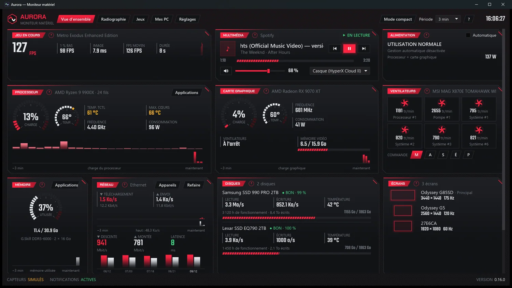
Aurora lit les capteurs de ton PC une fois par seconde et les met dans un tableau de bord lisible. Rien n'est inventé : ce sont les mêmes valeurs que ton BIOS. Aurora reads your PC's sensors once a second and lays them out in a dashboard you can actually read. Nothing is made up: these are the same values your BIOS reports.
Dis une fois à Aurora combien de ventilateurs il y a à chaque endroit de ton boîtier. Elle dessine ta tour : chaque pièce s'allume selon sa température, les ventilateurs tournent à leur vraie vitesse, et l'air se réchauffe en traversant la machine. Elle calcule aussi la pression dans le boîtier — positive, l'air passe par les filtres et la poussière reste dehors. Tell Aurora once how many fans sit at each spot in your case. It draws your rig: each part lights up according to its temperature, the fans spin at their real speed, and the air heats up as it crosses the machine. It also works out the case pressure — positive means air comes in through the filters and dust stays outside.
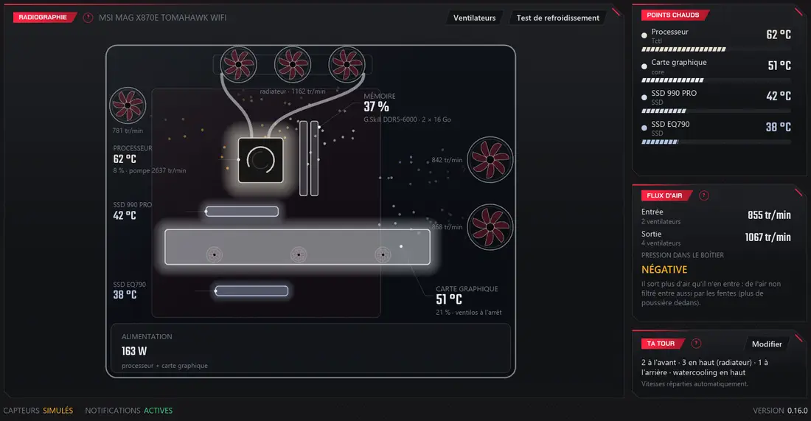
Cinq modes : la courbe de ton BIOS, Silencieux, Équilibré, Performance, ou Automatique, qui choisit selon ce que tu fais — Performance dès qu'un jeu démarre, Silencieux quand de la musique joue. Five modes: your BIOS curve, Quiet, Balanced, Performance, or Automatic, which picks according to what you are doing — Performance as soon as a game starts, Quiet when music is playing.
Sécurités : tout passe à 100 % au-dessus de 85 °C, jamais sous 20 %, et ta carte mère reprend la main dès qu'Aurora se ferme. Safeguards: everything goes to 100 % above 85 °C, never below 20 %, and your motherboard takes over the moment Aurora closes.
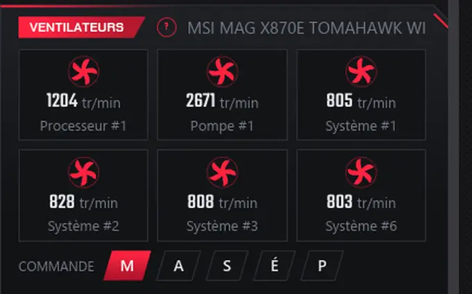
Le processeur travaille à fond deux minutes, puis se repose une minute. Aurora mesure jusqu'où il chauffe, en combien de temps il se stabilise, comment tes ventilateurs réagissent et à quelle vitesse il redescend. The processor runs flat out for two minutes, then rests for one. Aurora measures how hot it gets, how long it takes to settle, how your fans react and how fast it comes back down.
Le détecteur de poussière compare tes tests dans le temps. Si la montée de température grimpe de mois en mois, c'est que le refroidissement faiblit — filtres encrassés, pâte thermique qui sèche. The dust detector compares your tests over time. If the temperature rise creeps up month after month, your cooling is losing ground — clogged filters, thermal paste drying out.
Aurora reconnaît tes jeux (Steam, Epic, GOG, Xbox, EA, Ubisoft) et mesure leurs FPS sans rien modifier dans le jeu. L'overlay s'ouvre tout seul quand une partie démarre, dans sa propre petite fenêtre : ton tableau de bord reste ouvert en grand sur un autre écran. Trois dispositions, taille et opacité au choix, raccourci clavier même en plein jeu. Aurora recognises your games (Steam, Epic, GOG, Xbox, EA, Ubisoft) and measures their FPS without changing anything in the game. The overlay opens by itself when a session starts, in its own small window: your dashboard stays open, full size, on another display. Three layouts, your choice of size and opacity, and a keyboard shortcut that works mid-game.
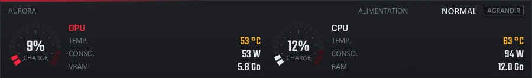
Un bouton dans la carte Processeur ou Mémoire ouvre la liste des vingt applications les plus gourmandes — et te laisse en arrêter une, après confirmation. Ce qui fait tourner Windows n'a pas de bouton : l'arrêter planterait ta session. A button on the Processor or Memory card opens the list of the twenty hungriest applications — and lets you stop one, after a confirmation. What keeps Windows running has no button: stopping it would crash your session.
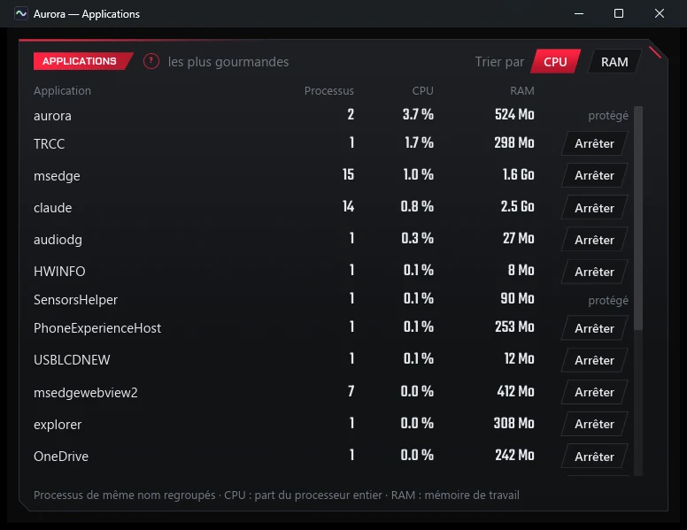
Les Aurora de la maison se trouvent toutes seules sur le réseau local et s'affichent en tuiles. Un code QR ouvre la même vue dans le navigateur de ton téléphone, sans rien installer. The Auroras at home find each other on the local network and show up as tiles. A QR code opens the same view in your phone's browser, with nothing to install.
Le partage est coupé par défaut. Une fois activé, il est en lecture seule : la seule commande à distance possible est la musique, et elle se décoche. Sharing is off by default. Once on, it is read-only: the only remote command possible is the music, and that can be unticked.
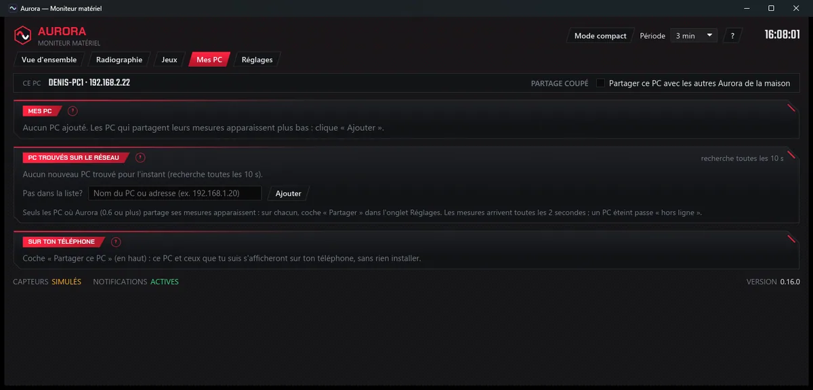
Carbone (fibre de carbone et rouge vif) est celui d'origine. Néon joue la science-fiction bleu et orange ; Glace le verre givré ; Clair est le seul sur fond blanc, pour une pièce ensoleillée ; Forge, c'est l'atelier du forgeron — acier brossé, rivets et braise sous les panneaux. Carbone (carbon fibre and vivid red) is the original one. Néon goes for blue-and-orange science fiction; Glace for frosted glass; Clair is the only one on white, for a sunlit room; Forge is the blacksmith's workshop — brushed steel, rivets and embers under the panels.
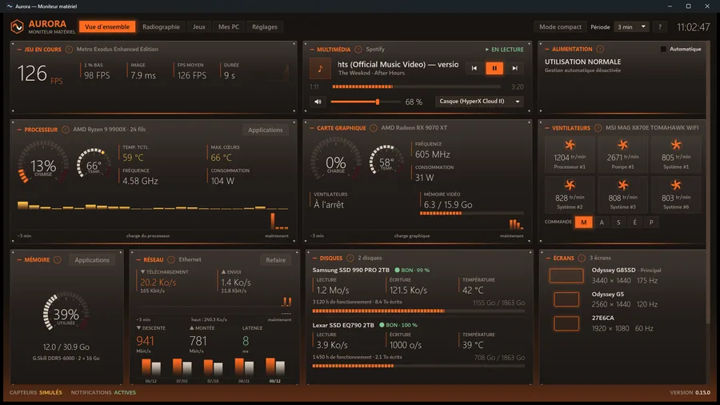
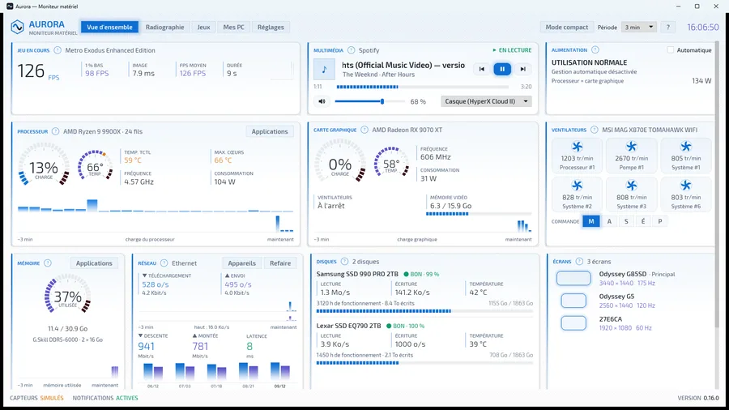
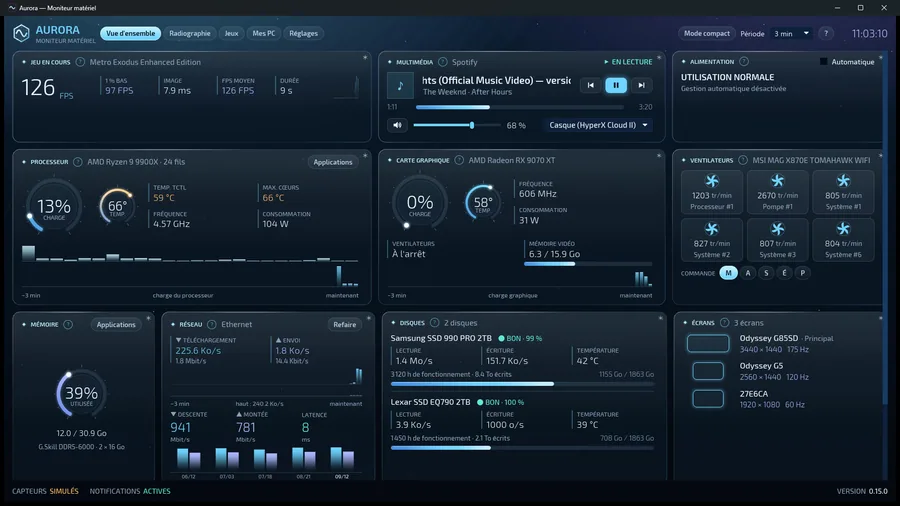
Toute l'application parle les deux langues : le tableau de bord, les bulles d'aide, les réglages, les notifications, l'installeur, et jusqu'aux unités. La langue suit celle de Windows, et se force dans les réglages. La page téléphone, elle, suit la langue du téléphone — un ami anglophone qui ouvre la page de ton PC français la lit en anglais. The whole application speaks both: the dashboard, the help bubbles, the settings, the notifications, the installer, right down to the units. The language follows Windows, and can be forced in the settings. The phone page follows the phone instead — an English-speaking friend opening the page of your French PC reads it in English.
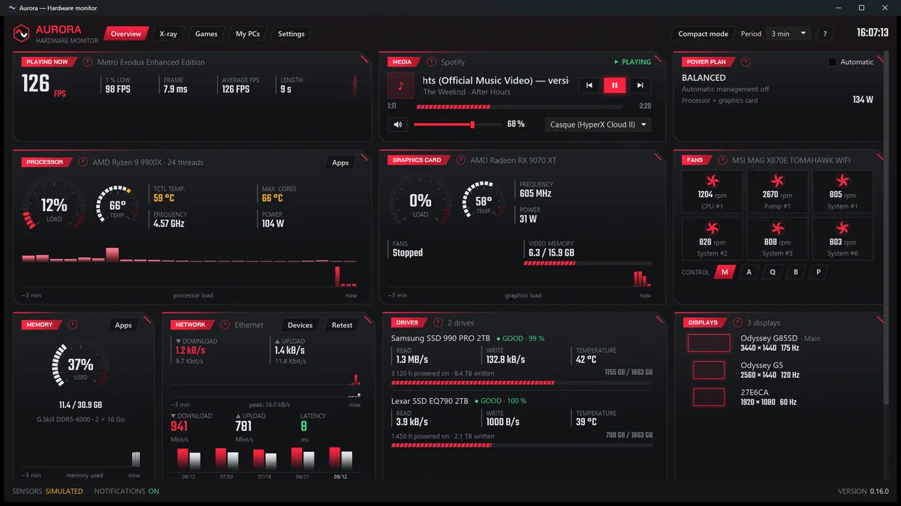
Pas de compte, pas de publicité, aucune mesure envoyée, personne suivi. Tes données restent sur ton PC — et sur ton réseau local si tu actives le partage toi-même. No account, no ads, no readings sent, nobody tracked. Your data stays on your PC — and on your local network if you turn sharing on yourself.
Elle demande deux choses à Internet, et seulement deux : une fois par jour, le numéro de la dernière version ; et le test de vitesse, quand tu cliques dessus. Les deux se coupent. It asks the Internet two things, and only two: once a day, the latest version number; and the speed test, when you click it. Both can be turned off.
Cette page-ci, par contre, compte ses visiteurs — combien de personnes viennent et depuis quel site. C'est fait par Cloudflare, sans cookie et sans rien qui identifie personne, et ça sert uniquement à savoir si quelqu'un entend parler d'Aurora. L'application, elle, ne sait rien de tout ça. This page, on the other hand, counts its visitors — how many people come and from which site. Cloudflare does it, with no cookies and nothing that identifies anyone, and it only serves to tell whether anyone is hearing about Aurora. The app itself knows nothing about any of it.
Windows 10 (version 1809 ou plus récente) ou Windows 11, en 64 bits. Les droits administrateur sont demandés à chaque démarrage : c'est la seule façon de lire les capteurs de température. Windows 10 (version 1809 or newer) or Windows 11, 64-bit. Administrator rights are requested at every start: that is the only way to read the temperature sensors.
L'installeur ajoute au besoin Microsoft .NET 10 et le pilote PawnIO, pris chez leurs auteurs et vérifiés avant d'être lancés. The installer adds Microsoft .NET 10 and the PawnIO driver if needed, taken from their authors and verified before being run.
Aurora est signée électroniquement. Windows sait d'où vient le fichier et te préviendra si quelqu'un le modifie en chemin. Tu verras le nom de l'auteur, Denis Desbiens, avant même d'installer. Aurora is digitally signed. Windows knows where the file comes from and will warn you if anyone alters it along the way. You will see the author's name, Denis Desbiens, before you even install.
Télécharge le fichier et ouvre-le. Ton navigateur ne devrait pas rechigner. Download the file and open it. Your browser should not object.
Windows demande les droits administrateur — Aurora en a besoin pour lire les capteurs de température, il n'y a pas d'autre façon. La fenêtre affiche « Éditeur vérifié : Denis Desbiens ». Windows asks for administrator rights — Aurora needs them to read the temperature sensors, there is no other way. The window shows “Verified publisher: Denis Desbiens”.
L'installation ajoute Microsoft .NET 10 et le pilote PawnIO s'ils manquent. Ça peut prendre quelques minutes, barre de progression figée : c'est normal. The installation adds Microsoft .NET 10 and the PawnIO driver if they are missing. That can take a few minutes with the progress bar frozen: this is normal.
Windows regarde aussi la réputation d'un fichier : combien de gens l'ont déjà installé sans ennui. Aurora vient de sortir, alors les premiers à l'essayer verront peut-être encore un avertissement. Clique « Informations complémentaires » : le nom de l'auteur y est. Cette réputation s'accumule toute seule. Windows also looks at a file's reputation: how many people have installed it without trouble. Aurora has just come out, so the first people to try it may still see a warning. Click “More info”: the author's name is right there. That reputation builds up on its own.
Tu peux vérifier le fichier toi-même : clic droit → Propriétés → onglet « Signatures numériques ». Ou compare son empreinte, dans PowerShell : Get-FileHash .\Aurora-Setup-0.16.0.exe -Algorithm SHA256
You can check the file yourself: right-click → Properties → “Digital Signatures” tab. Or compare its fingerprint, in PowerShell: Get-FileHash .\Aurora-Setup-0.16.0.exe -Algorithm SHA256
73006538BBBFB2CCC3C560280409E152E411710E3D1A7968FA898A679083FF58
Langue, thème, démarrage avec Windows, partage réseau, et les seuils de température degré par degré — un portable chauffe plus qu'une grosse tour, alors les alertes s'ajustent. Chaque carte a une bulle « ? » qui explique en mots simples ce qu'elle montre. Language, theme, start with Windows, network sharing, and the temperature limits degree by degree — a laptop runs hotter than a big tower, so the alerts adjust. Every card has a “?” bubble explaining in plain words what it shows.
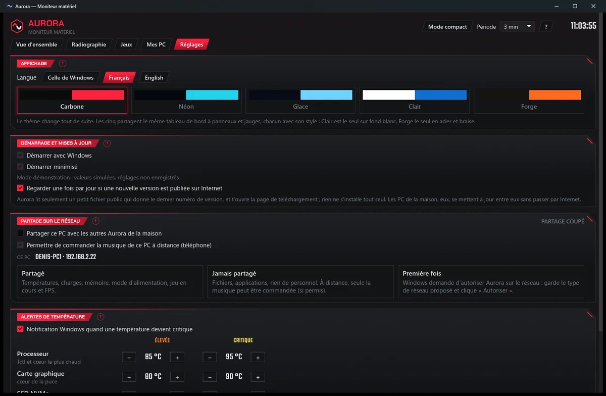
Pas de version payante, pas de publicité, rien à débloquer, aucune fonction gardée en otage. Si elle t'est utile et que tu veux encourager la suite, il y a un pot. No paid version, no ads, nothing to unlock, no feature held hostage. If it is useful to you and you would like to help what comes next, there is a tip jar.
Un don ne donne droit à rien de plus : ni support, ni priorité, ni version spéciale. C'est un merci, pas un achat. A donation buys nothing extra: no support, no priority, no special build. It is a thank you, not a purchase.